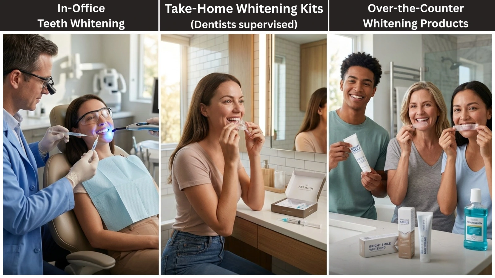

Teeth whitening is one of the most popular cosmetic dental treatments for improving tooth colour and enhancing smile appearance. Options range from over-the-counter whitening products and dentist-supervised take-home systems to professional in-office procedures.
This guide explains how teeth whitening works, the options available, their benefits, safety considerations, and the results you can realistically expect.
What Is Teeth Whitening?
Teeth whitening is a cosmetic dental procedure that lightens teeth by reducing stains and discoloration. Most whitening treatments use bleaching agents such as hydrogen peroxide or carbamide peroxide to break down stain molecules, making teeth appear brighter.
The effectiveness of whitening depends on the type and cause of discoloration.
How Teeth Whitening Works?
Tooth enamel (hard, outer protective layer of the tooth that covers and shields the inner structures) contains microscopic pores that can absorb pigments from foods, beverages, tobacco, and other substances. Over time, these pigments accumulate and cause discoloration.
During teeth whitening treatment, active ingredients penetrate the enamel and break down stain compounds, causing teeth to appear lighter in colour. Professional treatments typically use higher concentrations of whitening agents than over-the-counter products, often producing faster and more noticeable results.
Why Teeth Become Yellow: Causes and Types of Stains (Extrinsic vs Intrinsic)
Tooth discoloration can occur due tovarious reasons, and the cause often influences how well teeth whitening works. Discoloration is generally classified as either extrinsic or intrinsic.
Extrinsic Stains
Extrinsic stains affect the outer surface of the teeth and are commonly associated with lifestyle and dietary habits.
Common causes include:
- Coffee and tea
- Red wine
- Tobacco use
- Dark-colored foods and spices
- Poor oral hygiene
These surface stains typically respond well to professional and at-home whitening treatments.
Intrinsic Stains
Intrinsic stains develop within the tooth structure and are often more challenging to treat.
Common causes include:
- Natural aging
- Dental trauma
- Certain antibiotics, such as tetracycline
- Excess fluoride exposure during tooth development
- Genetic factors
Because intrinsic discoloration occurs beneath the enamel surface, whitening results may vary depending on the underlying cause.
Benefits of Teeth Whitening for Smile and Confidence
Teeth whitening offers both cosmetic and psychological benefits.
Enhanced Smile Appearance
Whiter teeth can create a cleaner, brighter, and more youthful-looking smile.
Improved Self-Confidence
Many people report feeling more confident in professional, social, and personal settings after teeth whitening treatment.
Non-Invasive Cosmetic Enhancement
Unlike veneers or crowns, teeth whitening improves tooth color without removing healthy tooth structure.
Fast and Noticeable Results
Professional whitening treatments can often deliver visible improvements in a single appointment.
Types of Teeth Whitening Treatments

Over-the-Counter Whitening Products
Common options include:
- Whitening strips
- Whitening toothpaste
- Whitening gels
- Whitening mouth rinses
These products may help improve mild surface stains but generally contain lower concentrations of whitening agents.
Dentist-Supervised Take- Home Whitening Kits
These systems use custom-made trays and professional-grade whitening gel provided by a dentist. The custom-made trays are specially designed for your teeth, allowing the whitening gel to work more effectively.
Advantages include:
- Convenience
- Better tray fit
- Consistent results
- Professional guidance
Professional In-Office Teeth Whitening
Performed by a dental professional, this treatment uses high-concentration whitening agents to achieve rapid and predictable results.
Benefits include:
- Faster whitening
- Professional supervision
- Customized treatment
- Reduced risk of incorrect use
At - Home Teeth Whitening vs Professional Whitening
Over-the-Counter and Natural Teeth Whitening Methods: What Works and What Doesn't
Many people search for natural ways to whiten teeth, but scientific evidence supporting these methods remains limited.
Methods That Have Demonstrated Effectiveness
- Peroxide-based whitening strips
- Dentist-approved whitening gels
- Professional whitening treatments
Methods With Limited Scientific Evidence
- Activated charcoal
- Oil pulling
- Fruit-based whitening remedies
- Homemade whitening mixtures
While some natural approaches may help remove superficial stains, they do not significantly alter intrinsic tooth color. Excessive use of abrasive remedies may also contribute to enamel wear.
Teeth Whitening vs Teeth Bleaching: Key Differences
Teeth bleaching is a specific type of teeth whitening. While the terms teeth whitening and teeth bleaching are often used interchangeably, bleaching specifically refers to the use of peroxide-based treatments to lighten teeth beyond their natural shade. In everyday dental practice and marketing, many whitening treatments are technically bleaching procedures.
Is Teeth Whitening Safe?
Teeth whitening is generally considered safe when performed under professional supervision or when approved products are used as directed.
Current evidence suggests that professionally supervised whitening and approved whitening products do not cause clinically significant long-term damage to healthy enamel when used as directed.
Because individual oral health needs vary, a dental evaluation before treatment can help determine whether teeth whitening is a suitable option and support safer, more predictable outcomes.
Risks and Side Effects of Teeth Whitening
Although whitening is considered safe, temporary side effects can occur.
Tooth Sensitivity
Temporary sensitivity is the most commonly reported side effect and usually resolves shortly after treatment.
Gum Irritation
Whitening gel that comes into contact with soft tissues may cause temporary irritation.
Uneven Whitening
Crowns, veneers, fillings, and other restorations do not respond to whitening agents in the same way as natural teeth, potentially creating color differences.
Most whitening-related side effects are mild and temporary.
Who Is a Good Candidate for Teeth Whitening
Teeth whitening may be suitable for individuals who:
- Have healthy teeth and gums
- Have yellow or surface-level staining
- Maintain good oral hygiene
- Want a conservative cosmetic treatment
- Have realistic expectations regarding outcomes
Patients with yellow-toned discoloration often achieve the most noticeable results.
Who Should Avoid Teeth Whitening?
Teeth whitening may not be suitable until underlying dental problems have been addressed.
Whitening should generally be postponed or avoided in:
- Individuals with untreated cavities
- Patients with active periodontal disease
- Those experiencing severe tooth sensitivity
- Individuals with cracked teeth or exposed tooth roots
- Children and adolescents unless specifically recommended by a dentist
- Patients with extensive crowns, veneers, or tooth-colored fillings in visible areas
A comprehensive dental examination can help determine whether teeth whitening is appropriate.
Teeth Whitening Results: What to Expect and Factors That Influence Outcomes
Teeth Whitening Results: What to Expect and Factors That Influence Outcomes
Factors that influence outcomes include:
- Type and severity of stains
- Whitening method used
- Age of the individual
- Oral hygiene habits
- Tobacco use
- Dietary choices
Many patients notice visible improvement after treatment, although some forms of discoloration may require alternative cosmetic solutions such as dental veneers, bonding, or crowns(in some cases).
How to Maintain White Teeth After Whitening Treatment
To help maintain whitening results:
- Brush twice daily with fluoride toothpaste
- Floss regularly
- Limit coffee, tea, red wine, and other staining beverages
- Avoid tobacco products
- Attend regular dental cleanings
- Follow your dentist's maintenance recommendations
- Consider periodic touch-up treatments when needed
Many patients notice visible improvement after treatment, although some forms of discoloration may require alternative cosmetic solutions such as dental veneers, bonding, or crowns(in some cases).
When Teeth Whitening May Not Work
Certain types of discoloration may respond poorly to whitening treatment.
-
1. Tetracycline Staining
Discoloration caused by tetracycline antibiotics can be difficult to treat and may require alternative cosmetic procedures such as dental veneers, bonding, or crowns.
-
2. Gray or Blue-Toned Stains
These stains are often more resistant to whitening than yellow discoloration.
-
3. Dental Restorations
Crowns, veneers, fillings, and bonding materials do not whiten with peroxide-based treatments.
-
4. Severe Intrinsic Staining
Deep discoloration within the tooth structure may not respond predictably to whitening.
-
5. Dental Fluorosis
Moderate to severe dental fluorosis may not respond adequately to whitening alone. Depending on severity, treatments such as microabrasion, composite bonding, or veneers may provide better aesthetic results.
Common Teeth Whitening Myths Debunked
-
Myth 1: Teeth Whitening Permanently Damages Enamel
Professional and properly supervised whitening treatments do not permanently damage healthy enamel.
-
Myth 2: Whitening Results Last Forever
Whitening results gradually fade over time and require maintenance.
-
Myth 3: All Whitening Products Work Equally Well
Whitening effectiveness depends on the active ingredients, concentration, and treatment method used.
-
Myth 4: Natural Whitening Remedies Are Always Safer
Some DIY remedies can be abrasive and may contribute to enamel wear if used improperly.
Conclusion
Teeth whitening remains one of the most effective cosmetic dental treatments for improving smile appearance. While professional whitening generally delivers the fastest and most predictable results, at-home options may be suitable for mild discoloration. Consulting a dental professional can help determine the safest and most effective treatment based on your oral health and the cause of tooth staining.
Disclaimer: This blog is for educational purposes and does not replace professional dental consultation.
Frequently Asked Questions (FAQs)
References
- 1.American Dental Association. (2022, August 16). Whitening.
- 2. American Dental Association. (n.d.). Teeth whitening. MouthHealthy.
- 3. Carey, C. M. (2014). Tooth whitening: What we now know. Journal of Evidence-Based Dental Practice, 14(Supplement), 70–76
- 4. Healthdirect Australia. (2025, February). Teeth whitening.
- 5. Clemons, A. (2024, July 15). Are teeth whiteners safe and worth trying? Cleveland Clinic Health Essentials.
- 6. Fries, W. C. (2023, November 15). Teeth whitening: How it works and what to expect. WebMD.
- 7. Watson, K. (2022, June 6). Teeth whitening: How it works, types, and side effects. Healthline.
Authored By
Dr. R. Manjula
BDS, Fellowship in Endodontics
A dentist and dental health educator with a strong focus on practical, evidence-based dentistry. She values clear communication in clinical care and works towards improving patient awareness, supporting timely decisions that contribute to better long-term oral health outcomes.